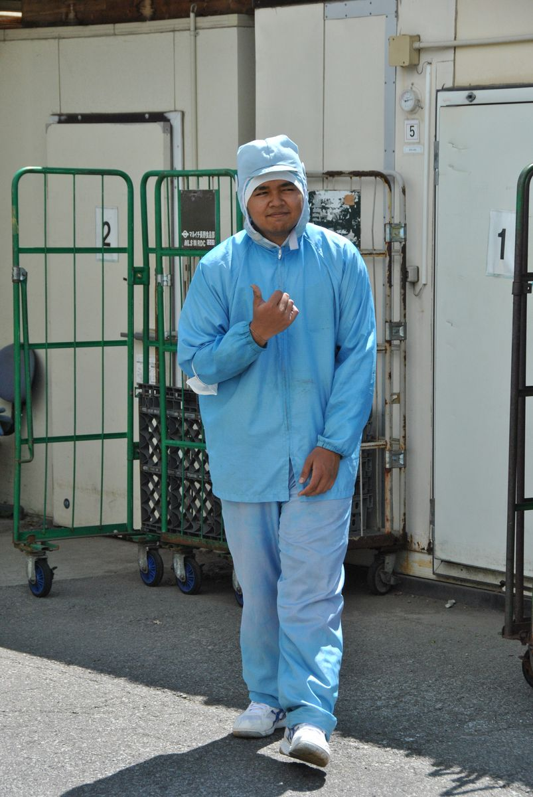
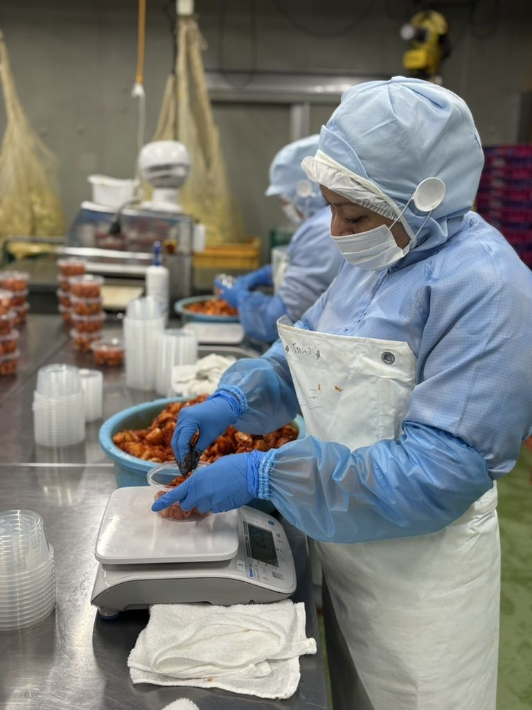
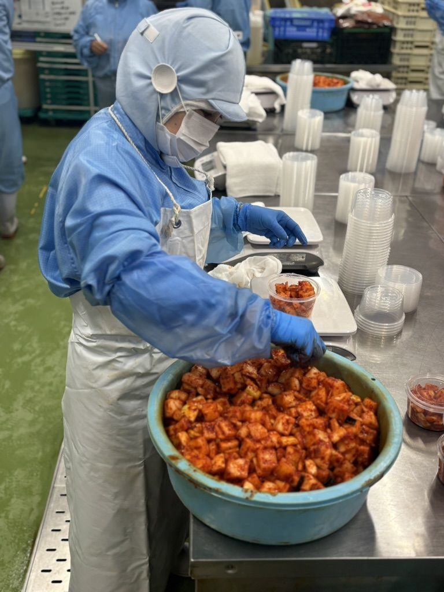
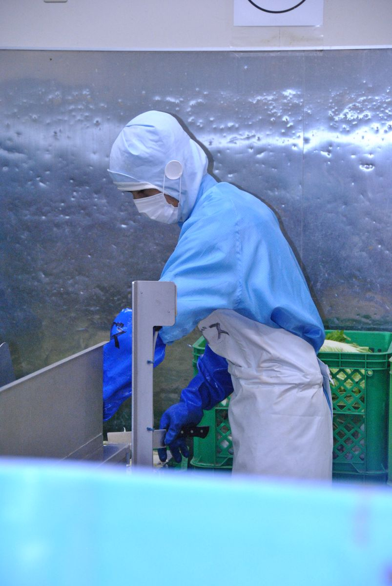
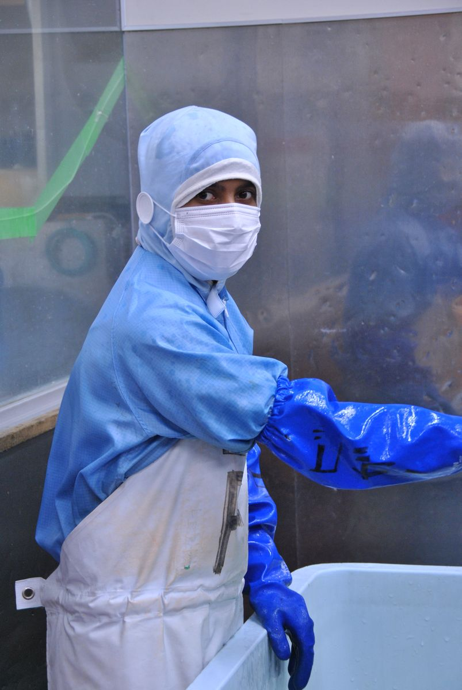
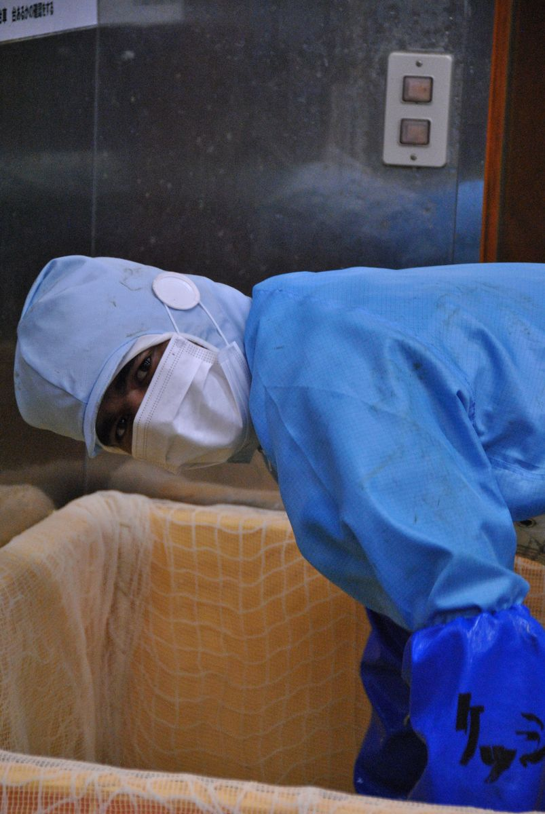

自社工場で外国人材を
雇用・育成してきた実績
私たちは紹介業の前に、キムチ製造の会社です。自社の2つの工場で外国人スタッフを受け入れ、育成し、ともに製品をつくってきました。「受け入れる側」の苦労と工夫を、実体験として知っています。
私たち自身が、食品製造の会社です。長野県上田市でキムチの製造を営み、自社工場で多くの外国人スタッフを雇用して、分かったことがあります。
彼らは意欲と目的にあふれ、働けることに感謝できる人材だということ。一方で、初めて受け入れる企業様には不安が多いことも、私たちは知っています。だからこそ——日本の文化と食品製造の現場を経験した人材を、私たちが育てて、ご紹介します。
ご相談・お見積りは無料です。採用が決まるまで費用はかかりません。
PROBLEM
その悩み、同じ食品製造業の私たちが、いちばんよく分かります。だからこそ、現場に定着する人材だけをご紹介します。
REASON
私たちは紹介業の前に、キムチ製造の会社です。自社の2つの工場で外国人スタッフを受け入れ、育成し、ともに製品をつくってきました。「受け入れる側」の苦労と工夫を、実体験として知っています。
ご紹介するのは、食品製造の現場で経験を積んだ外国人材。衛生管理・温度管理・ライン作業の基本が身についているかを、私たち自身の現場基準で確認したうえでマッチングします。
紹介して終わりではありません。在留資格の手続きや生活面のフォローなど、外国人材が長く働き続けるための支援体制を整えています(登録支援機関 申請中)。
VOICE
タイ・ネパール・パキスタン出身のスタッフが、キムフーズの現場で実際に働いています。私たちがご紹介するのは、こうして日本の食品製造の現場を経験してきた人材です。

製造・出荷サポート
屋外での運搬作業も担当。いつも明るい現場のムードメーカーです。

計量・盛り付け担当
1カップずつ正確に計量して盛り付ける、丁寧さが求められる仕事です。

盛り付け・パック詰め担当
カクテキの盛り付け作業中。スピードと正確さを両立しています。

白菜カット担当
キムチづくりの最初の工程。包丁さばきはベテランの域です。

塩漬け・下処理担当
おいしいキムチの土台をつくる、力仕事もこなす頼れる存在です。

下処理担当
細かい確認作業も丁寧に。真面目な仕事ぶりが光ります。
※ スタッフのお名前・出身国・コメントは、本人の了解を得たうえで順次追加していきます。
TALENT
食品製造の現場経験を持つ外国人材を、貴社の工程・シフトに合わせてご紹介します。
惣菜・漬物・パン・菓子・水産加工など、飲食料品製造業分野の特定技能を持つ人材。即戦力として製造ラインに入れる経験者をご紹介します。
技能実習や就労経験を通じて、日本の食品工場の衛生ルール・作業手順を理解している人材。HACCPに基づく衛生管理の現場にもスムーズに馴染めます。
FLOW
初回のご相談から入社後のフォローまで、一貫して私たちが担当します。
貴社の製造工程・シフト・求める人物像を伺います。必要に応じて現場を見学させていただき、実際の作業内容を把握します。
食品製造の経験・日本語力・在留資格を確認した候補者を、私たちの現場基準で選定してご提案します。
面接の設定から当日の同席まで対応します。候補者にも実際の現場を見てもらい、入社後のミスマッチを防ぎます。
雇用条件の調整や契約書類の準備をサポートします。外国人雇用が初めての企業様にも、必要な手続きを分かりやすくご案内します。
在留資格の変更・更新に必要な書類の準備を、行政書士等の専門家と連携してサポートします。
入社後も定期的に本人と企業様の双方に状況を伺い、生活面・仕事面の困りごとを早期に解消します。
FEE
完全成功報酬型。
採用が決まるまで、
費用は一切かかりません。
FAQ
初めて外国人材を受け入れる企業様から、よくいただくご質問をまとめました。
はい、初めての企業様こそ歓迎です。私たち自身も、初めての受け入れから始めて経験を積んできました。必要な準備・手続き・社内での受け入れ体制づくりまで、最初から順を追ってご案内します。
在留資格の変更・更新に必要な書類の準備を、行政書士等の専門家と連携してサポートします。企業様にご用意いただく書類は事前にリストでお渡しし、負担を最小限にします。
現場での作業指示や衛生ルールを理解できる日本語力を、私たちが直接確認したうえでご紹介します。工程によって必要な日本語レベルは異なりますので、ヒアリング時にご相談ください。
候補者の在留資格の状況によって変わります。すでに就労可能な在留資格をお持ちの方は比較的短期間で、資格変更が必要な場合は審査期間を見込む必要があります。ヒアリング時に、貴社のケースでの目安をお伝えします。
技能実習は技能移転を目的とした制度で、特定技能は即戦力人材の就労を目的とした在留資格です。当社では主に、飲食料品製造業分野の特定技能人材をご紹介しています。制度の詳しい違いも、面談時に分かりやすくご説明します。
長野県をはじめ、全国各地ご対応可能です。お気軽にご相談ください。
COMPANY
| 会社名 | 株式会社キムフーズ |
|---|---|
| 代表者 | 代表取締役 金 愼 |
| 設立 | 2001年5月 |
| 所在地 | 〒386-0005 長野県上田市古里80-18 |
| 事業内容 | 食品(キムチ)の製造・販売/有料職業紹介事業 |
| 許可番号 | 有料職業紹介事業 厚生労働大臣許可 20-ユ-300218 |
| 登録支援機関 | 申請中 |
| 製造拠点 | 自社工場・真田工場(長野県上田市) |
| お問い合わせ | TEL:080-9707-7599(平日 9:00–17:00) MAIL:naokane-kim@kankokuya.net |
CONTACT
「外国人雇用は初めて」という企業様も歓迎です。同じ食品製造業の目線で、貴社に合う進め方をご提案します。ご相談は無料です。
メールでのお問い合わせ
naokane-kim@kankokuya.net
お電話でのご相談 080-9707-7599(平日 9:00–17:00)